Project links
STRESS
01
Problem statement
Stress builds up quietly
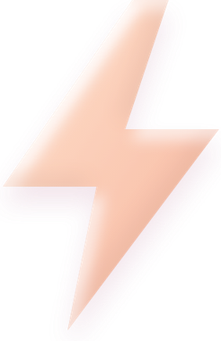
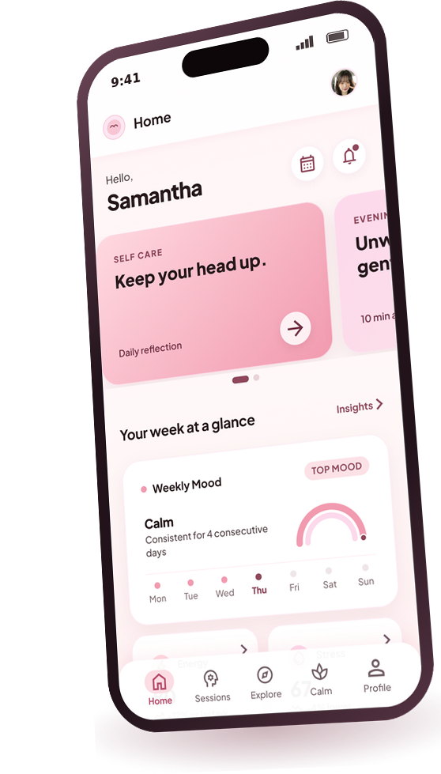
The problem
Everyday stress, overthinking and poor sleep build up quietly. Most people don’t check in with their feelings until it gets heavy.
Who has it
Students and young working adults who juggle study, work and family. They want support, but they are not in crisis.
When it happens
At night when thoughts race, before a stressful task, or after a long day. These moments leave only a few minutes to spare.
Stress · 67
Thoughts racing
02
CHOICES
01
Problem statement
Too slow to help
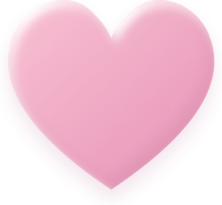
Current alternatives
How people cope now
✕
Scrolling social media to switch off
✕
Journaling apps with long forms
✕
Meditation apps with huge libraries and paywalls
✕
Waiting weeks for a therapy appointment
✕
Doing nothing until the stress builds up
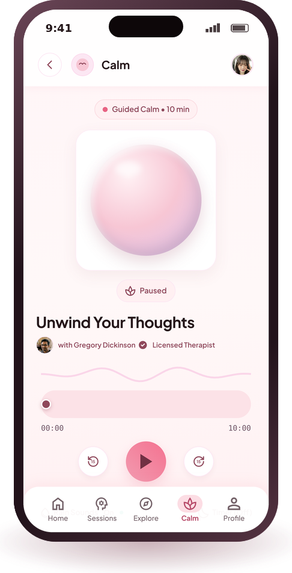
Proposed solution
How Mental Help does it better
A one-tap check-in with six feelings
A breathing orb that slows your breath
Short lo-fi audio with rain sounds
Therapist sessions booked in a few taps
A mood calendar and weekly view with your streak
03
AUDIENCE
02
Target audience
Quick support, young adults
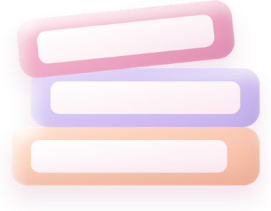
University students
Exam stress, late nights and poor sleep.
About 18–24
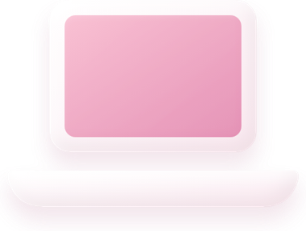
Young professionals
Work pressure and overthinking after hours.
About 23–35
New to therapy
Curious about therapy, but unsure where to start.
Any age
Built for
Everyday stress, sleep and overthinking
Not built for
Crisis care or medical diagnosis
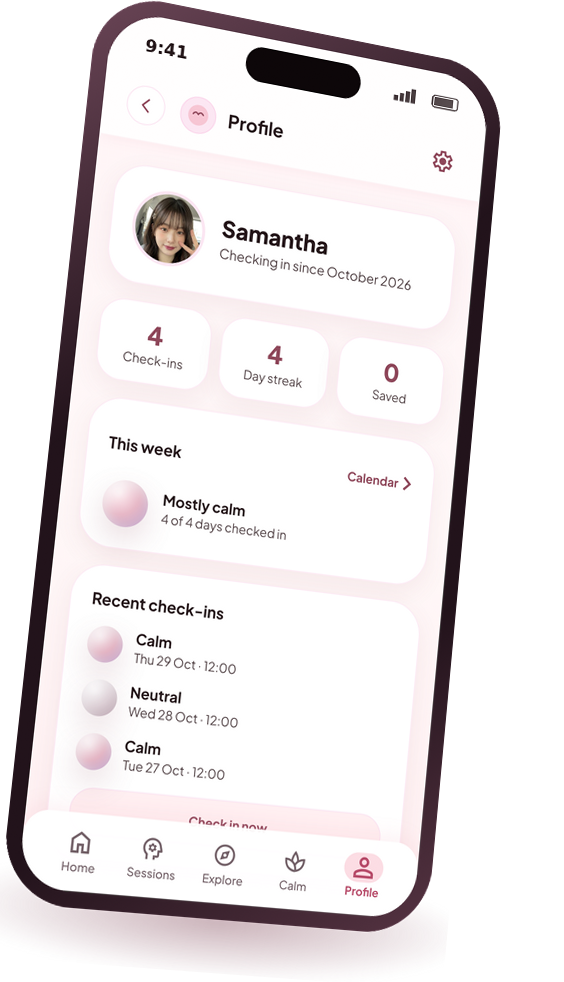
04
02
Target audience · Persona board
Meet Samantha
Samantha, 26
Junior marketing executive
Phone-first
Busy weekdays
“I know I should look after my mind. I just never find the time.”
Goals
- Notice her mood each day
- Wind down before sleep
- Try therapy without hassle
Frustrations
- Meditation apps feel overwhelming
- Journaling forms take too long
- Therapy prices are unclear
Daily habits
- Checks her phone between meetings
- Has 2–5 minute gaps in her day
- Listens to audio in bed
What she needs
- A one-tap check-in
- Breathing that paces her
- Clear prices, quick booking
05
02
Scope · Chosen breakpoint
Made for one hand
Breakpoint
Mobile-first web app
390px
Design width. Bigger screens show a centred 430px column.
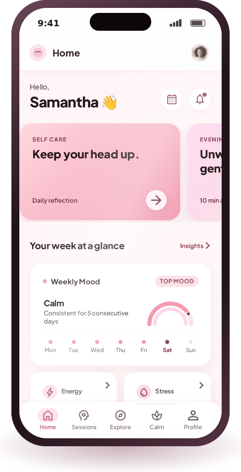
390px
Thumb zone
01
Thumb reach
Five tabs sit in a bottom bar. Save and Buy Now sit in the lower half.
02
Touch targets
Every primary action has a tap area of at least 44×44px, even when the icon looks smaller.
03
One column
Cards stack top to bottom, so there is one clear path down the screen.
04
Calm to read
Large type, AA contrast and a reduce-motion setting in Settings.
06
FLOW
03
User flow
Five goals, one Home
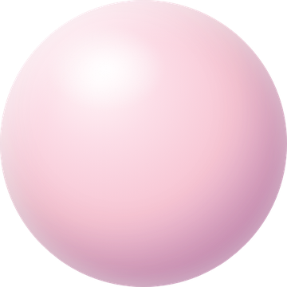

07
04
Design system · Colour
Soft blush, deep rose
Background
#FFF8F8
page
Blush
#FFF0F2
pills
Petal
#FCE2E7
borders
Primary pink
#F29BB0
buttons
Deep rose
#8F485B
links
Wine
#713043
on pink
Plum
#725667
stress
Ink
#26181B
headings
Contrast fix
Same button, two text colours
Save Check-In →
White on pink
2.08:1 · Fails
Save Check-In →
Wine on pink
4.57:1 · Passes AA

08
Aa
04
Design system · Type & components
One typeface, five sizes
Aa
Plus Jakarta Sans
Shown enlarged
Regular
Bold
ExtraBold
Display · 32/40 Bold
Mental Help
Greeting · 28/36 ExtraBold
Hello, Samantha
Card title · 22 ExtraBold
Keep your head up.
Body · 14/20 Regular
A tranquil headspace, breathing easily.
Components
Save Check-In →
Sleep
Work
Family
3
Days
4
Days
5
Days
09
MASCOT
04
Design system · Creative direction
Make the mascot breathe, not pose
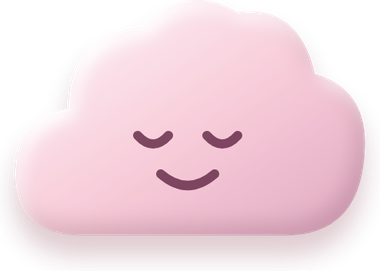
A · Refined Soft Vinyl
A premium art-toy cloud. Great for stills, but every state needs a new render.
C · Warm Editorial Line
Hand-drawn ink over watercolour. Very human, but hard to animate and common in journal apps.
Chosen
B · Breathing Light
A frosted orb lit from inside. Drawn in code, so it breathes with the audio and scales from logo to hero.
10
GENERIC
04
Design system · Rationale
Why the old mascot felt generic
“Kawaii 3D” AI look
One grin for every moment
Avatars in four styles
What I found
It looked like every other AI mascot
The 3D renders looked like stock images and never reacted to the user. Even the logo cloud wore the “Anxious” face.
11
04
Design system · Rationale
What I changed
Show mood with form, light and speed
No cartoon face. It reads like a weather app or a smart light.
One body, many states
One companion across the app, so users bond with it.
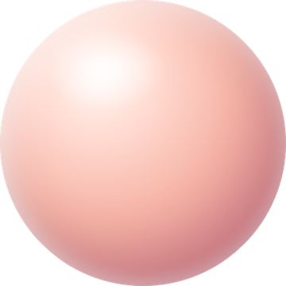
Acknowledge, then soothe
Anxious and Frustrated start fast, then slow into calm.
Calm
Pacer
leads your breath
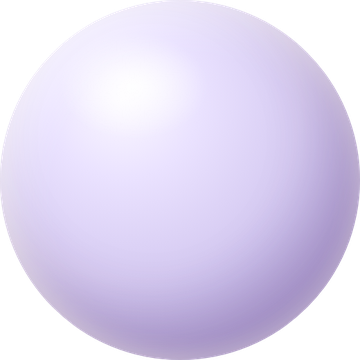
Check-in
Mirror
shows your feeling
Sessions
Companion
one orb per day
12
FEEL
04
Design system · Emotion system
One orb, six feelings
The mascot breathes instead of posing. Each feeling changes its colour and speed.
Joyful
2.6s · rises
Calm
6s · even
Neutral
8s · drifts
Anxious
1.4s · then settles
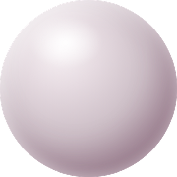
Depleted
7s · sinks
Frustrated
1.8s · then settles
Calm breathing cycle · 12 seconds
Breathe in · 4s
Hold · 2s
Breathe out · 6s
13
PROTOTYPE
05
HTML prototype · Serene Blush
First clickable prototype

Home
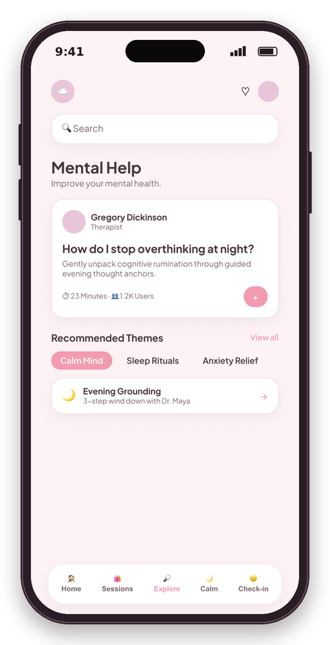
Explore
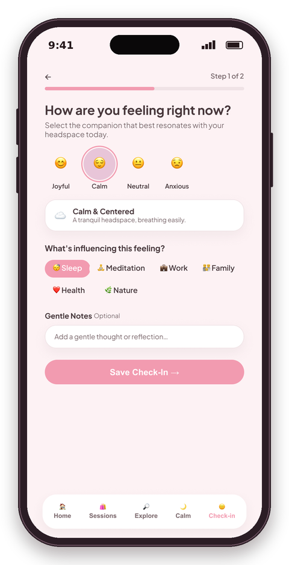
Check-in
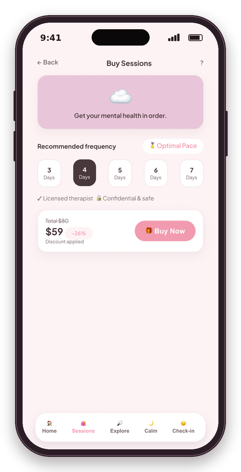
Buy Sessions
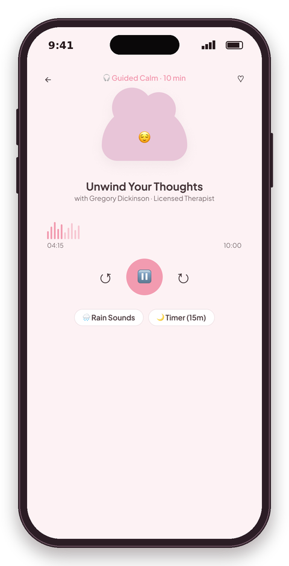
Calm
14
06
References
Where the look started
Source: “Mental Health Mobile App” concept on Dribbble
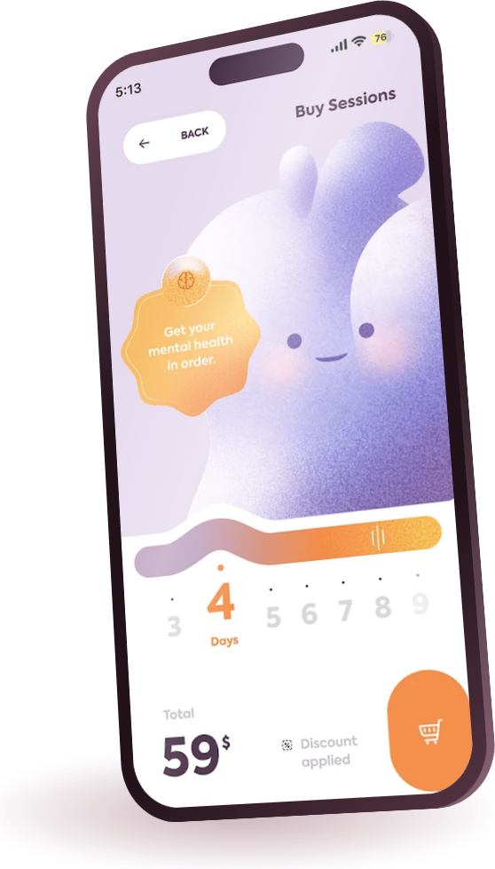
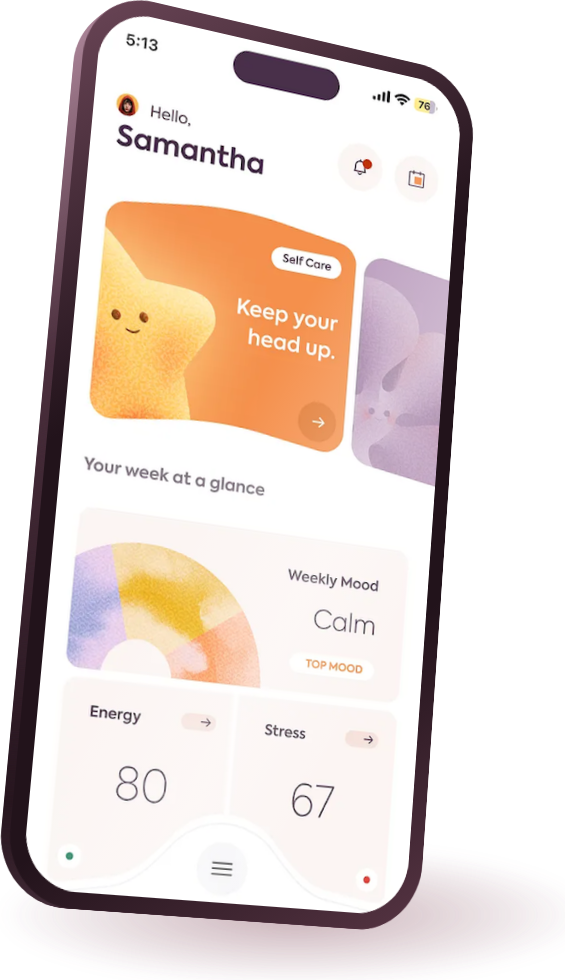
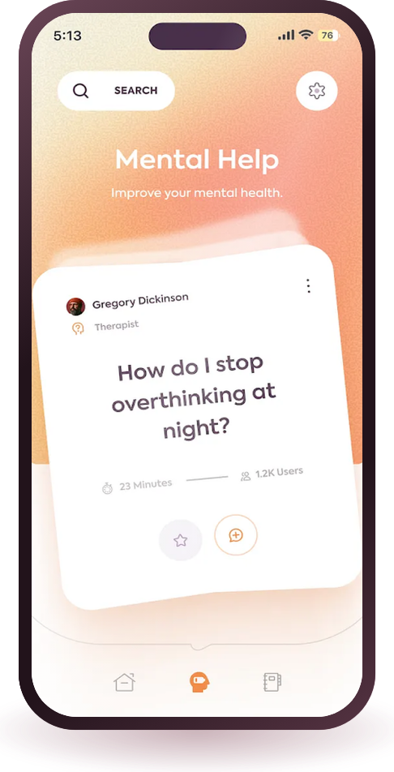
Buy Sessions
Explore
Home
15
06
References
What I kept, and what I changed
What I kept
What I changed
A soft, friendly mascot
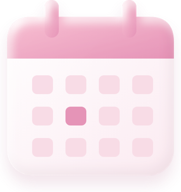
Big rounded numbers, like 4 Days and $59
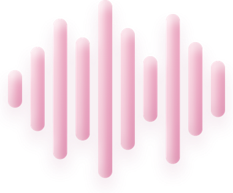
A wave slider for picking days
Floating cards with soft shadows
Orange and lilac became one blush palette
The clay mascot became a breathing orb
Added Check-in, Calm audio, Calendar, Profile and Settings
16
07
Figma screens
Hi-fi screens in Figma
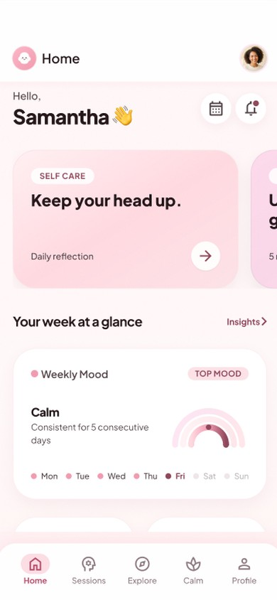
Home
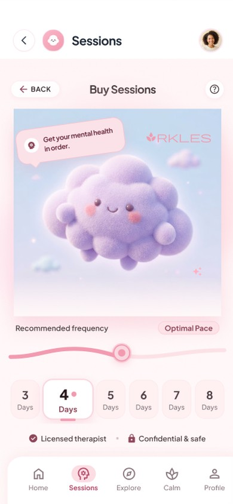
Buy Sessions
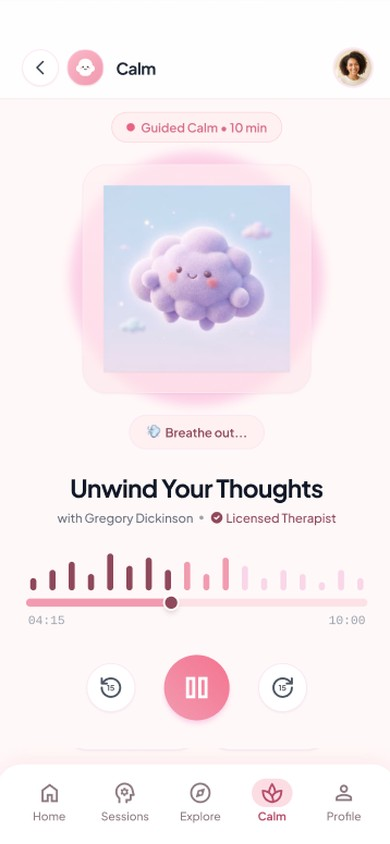
Calm
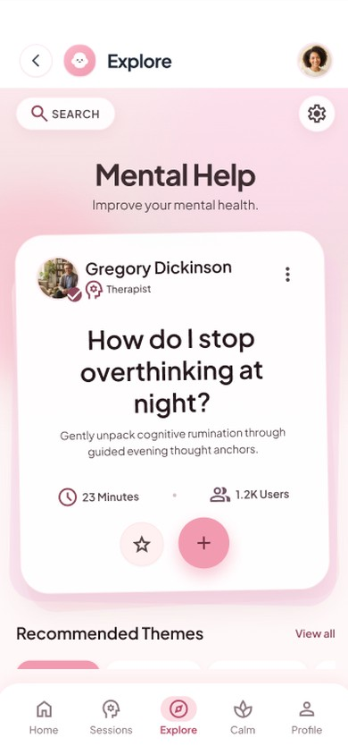
Explore
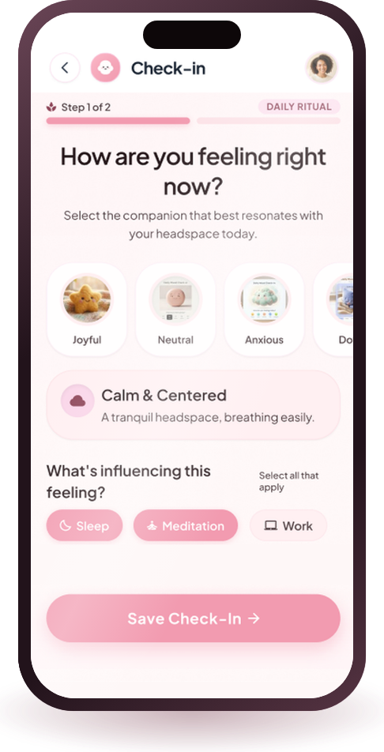
Check-in
17
LIVE
08
Built with Codex · Deployed on Vercel
Live on Vercel
Home
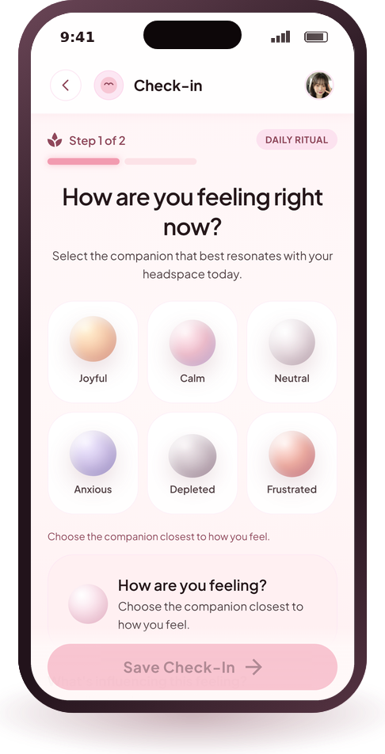
Check-in
Calm
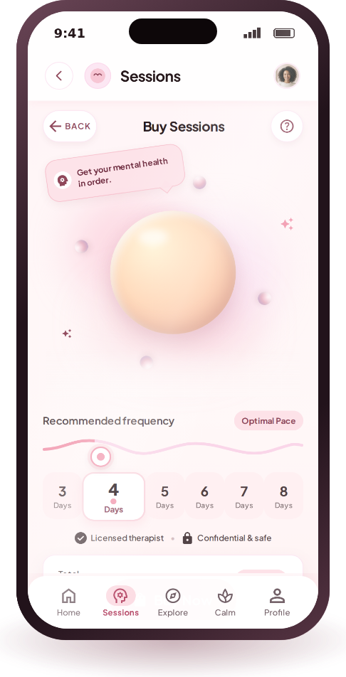
Sessions
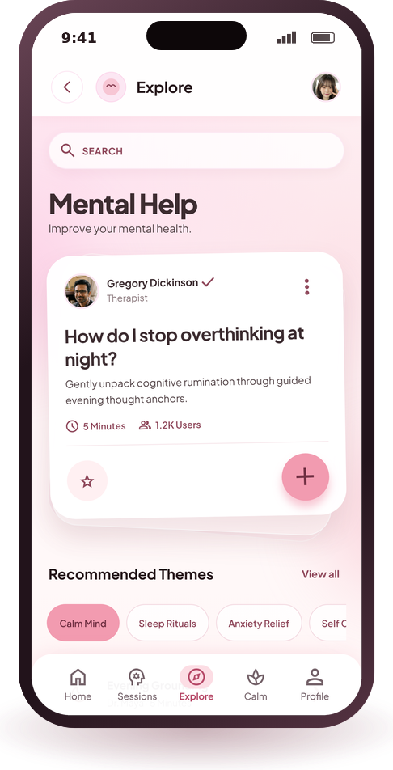
Explore
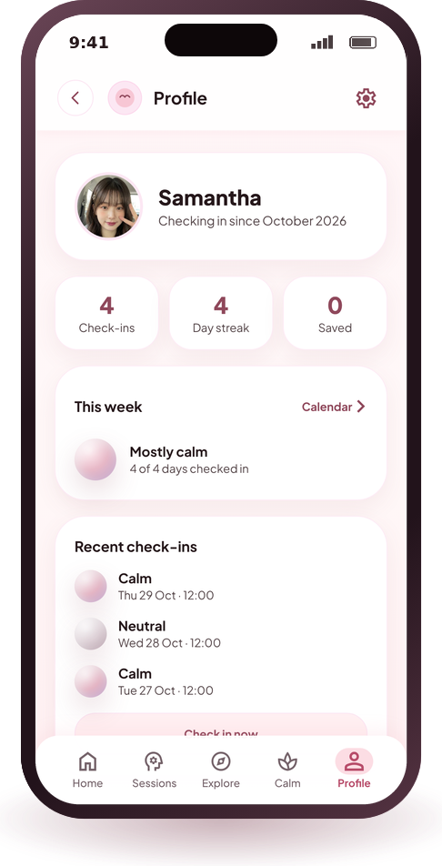
Profile
18
08
Built with Codex · Added after testing
Profile, Calendar and Settings
/profile
Profile shows my progress
Check-in numbers, this week’s mood, recent check-ins, saved sessions and my booked plan.
/calendar
Calendar shows every day
A month view of my check-ins, Monday first. Tap a day to see what I logged.
/settings
Settings holds the controls
Reduce motion, rain sounds, clear check-ins and About. Opens from the gear on Profile.
19
09
Bonus challenges
Six bonus challenges, from code to sound
Part 1 · Build and ship
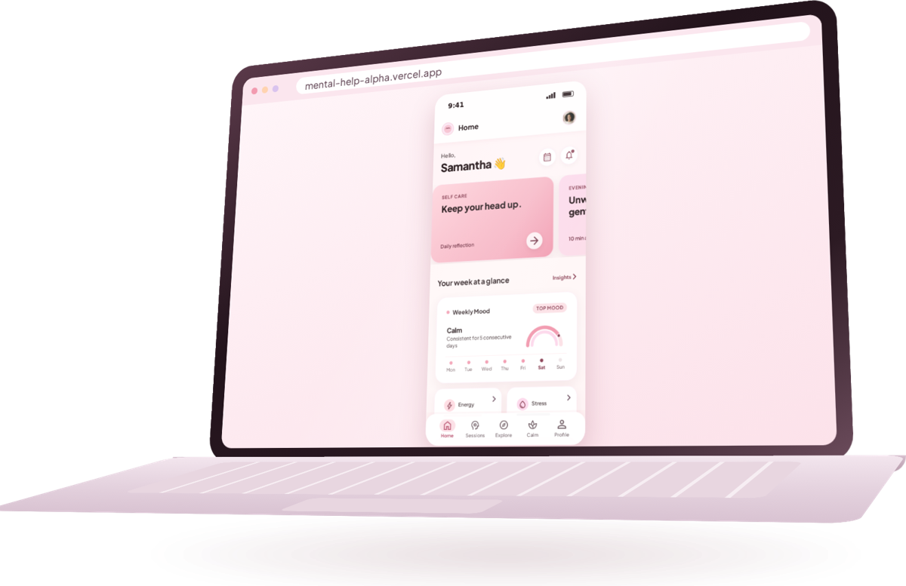
<Calm />
app.tsx
✓ built
React + TypeScript
Built with React, Vite, TypeScript, React Router and CSS Modules.
Ready
Production
Vercel
Custom deployment
Live on Vercel, with rewrites so every link opens the right screen.
On this phone
12
check-ins
On-device data
Check-ins, bookings and saved items stay on the phone. No account needed.
20
MOTION
09
Bonus challenges
Part 2 · Motion, sound and AI
Breathe in · 4s
Animations
Motion drives the breathing orb, six feelings and a reduce-motion mode.
Lo-fi + rain
WAV · seamless
00:00
10:00
Generated audio
Eleven lo-fi calm sessions and a rain loop, all royalty-free and made with code.
Claude
Spec ready: 28 sections
Codex
Phase built ✓
AI workflow
Claude wrote the spec and reviewed. Codex built the app from it.
21
10
Reflection · New skills and tools
New skills and tools
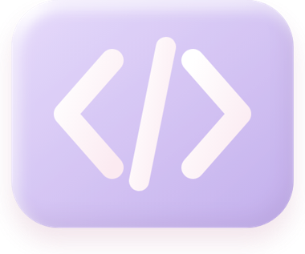
01
Writing a spec
A 28-section handoff for an AI builder, plus a log of 24 decisions.
02
Prompting Codex
Sending one phase at a time, then reviewing each screen before moving on.
03
React and Motion
How components, routes and design tokens turn Figma into code.
04
Vercel
Teams, projects, build settings and rewrites for a single-page app.
05
Accessibility
Measuring contrast, 44px tap areas on primary actions and support for reduced motion.
06
Creative direction
Critiquing my own assets and choosing one direction with clear reasons.
22
10
Reflection · Design and planning hurdles
What I had to work through
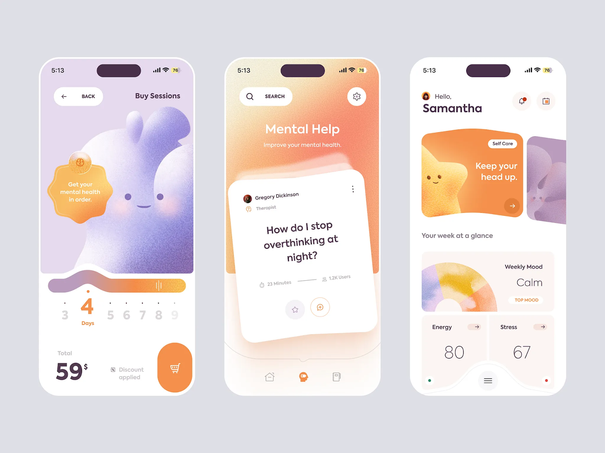
→
01
Finding the right inspiration
I wanted it to look and work like a period tracker: soft, simple and used every day.
I found a Dribbble concept with that feel and built my blush look from it.
→
02
Letting go of my mascot
I loved my 3D cloud, but it felt generic. I chose a breathing orb.
← Explore
← Calm
← Check-in
→
← Home
03
Testing my own app
Back buttons felt random, so I made them all go Home. Only Settings is different: it returns to Profile.
23
10
Reflection · Technical hurdles
What broke, and the fix
→
04
Figma assets were blocked
Exported icons as SVG code through Figma’s plugin API.
MP3 · gap
→
WAV · loops
05
The rain loop had a gap
Switched from MP3 to WAV, which loops without a gap.
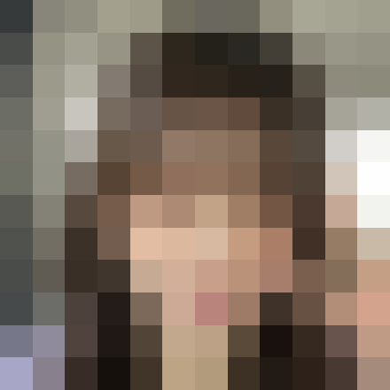
→
06
Profile photos looked pixelated
Replaced them with sharper portraits at four times the size.
24
10
Reflection · Fixes from testing
What I fixed after testing
07
Fixed
Gradient seams
One gradient now sits behind the whole app.
08
Fixed
Stuck Home cards
Drag with a mouse, or tap the dots.
09
Fixed
Doubled-up buttons
Kept the header arrow and the X. Removed the extras.
10
Fixed
“View all” did nothing
It now shows all four themes.
11
Fixed
Square Search outline
A soft ring now follows the pill.
12
Fixed
Clipped feelings
All six now sit in a 3 × 2 grid.
25
10
Reflection · What changed from concept to final?
One screen, four versions
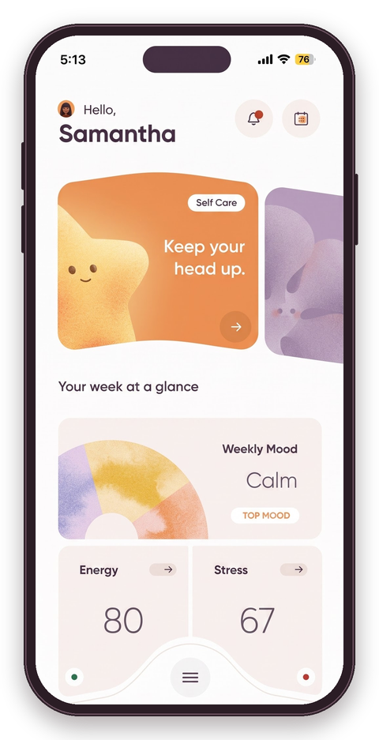
01 · Reference
Orange and lilac clay
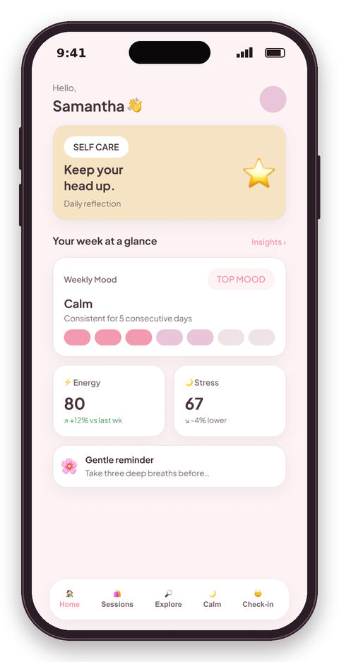
02 · Prototype
Blush with emoji icons
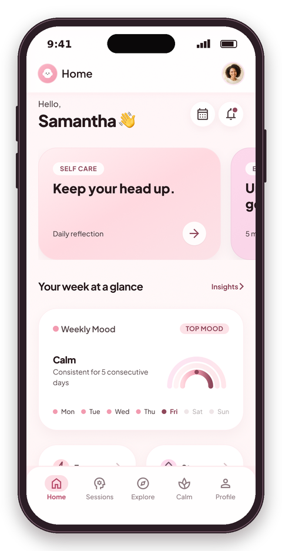
03 · Figma
Hi-fi blush cards
04 · Live app
Orb logo, live data
26
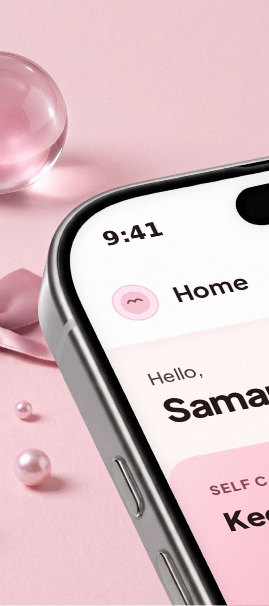
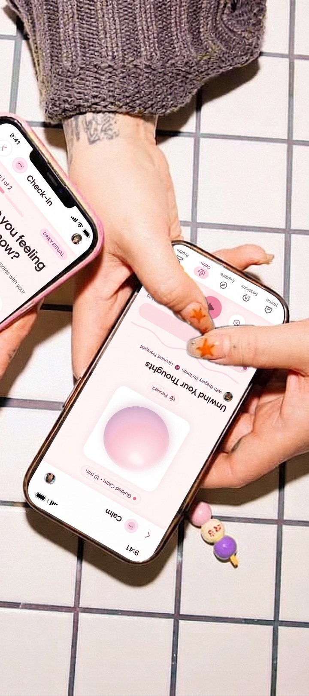
The final app
Calm, in your hand
27
10
Reflection · What would I build next?
With more time, I would add…
Insights
Add Insights with mood trends over weeks, building on the new Calendar.
Accounts & Sync
Sign-in with Supabase, so check-ins follow you to any device.
Real Booking
Pick a therapist and a time slot, then pay securely.
28